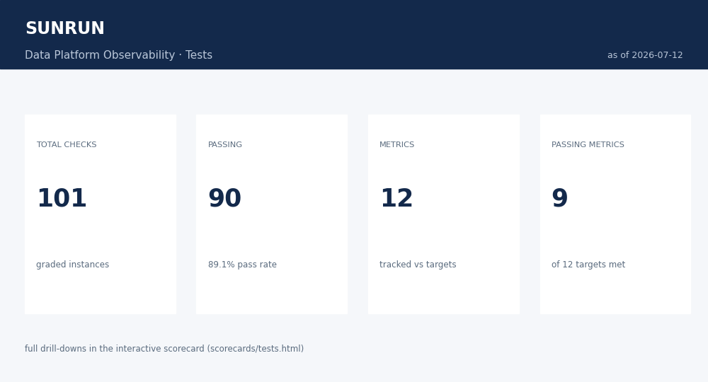

Case study · Framework
Data platform observability
Runtime observability for a solar company’s analytics warehouse (Sunrun-scale: CRM, fleet telemetry, billing, field service, reference feeds landing in Snowflake for dbt). Four measurements answer the questions consumers actually ask — is it on time, is it all there, does it mean what it says — graded daily, published as four scorecards, with alerting tuned to page the right owner exactly once.
The framework
The design, step by step
Step 1 — four measurements, one registry
Every check lives in a YAML registry with a measurement, a SQL file, a target, a severity, and an owner. Availability (did data arrive on schedule), Completeness (does it carry its metadata context), Consistency (is representation uniform), Expectations (did the right number of records arrive). Adding a check is a YAML entry plus a SQL file — no runner changes.
checks.yml: a check is data, not code
availability:
checks:
- id: AV-01
name: source_freshness
kind: check
scope: source_table # one instance per table in sources.yml
sql: sql/availability/source_freshness_results.sql
target: "delivery_status = 'On Time'"
warn_when: "delivery_status = 'At Risk'"
severity: high
expectations:
checks:
- id: EX-01
name: control_count_reconciliation
kind: check
scope: daily_source_table
sql: sql/expectations/control_count_reconciliation.sql
target: "abs_pct_diff <= 0.5"
severity: high
Step 2 — freshness is a contract, not a feeling
The SLAs live where dbt already looks: sources.yml, with warn_after / error_after per source table — telemetry in hours, batch extracts in a day, reference feeds in a week. dbt source freshness grades the contract; results land as a queryable log and roll up to On Time, At Risk, Late.
The two-tier SLA earns its keep on slow feeds: the stale rates file above warned one day earlier at the 7-day mark, then paged at 8 days — escalation, not surprise.
Step 3 — counts against expectations
Every extract carries a control count (what the source says it sent). Reconciling it against what landed catches records lost or duplicated in transit; a z-score against the trailing 28 days catches what reconciliation cannot — the day the control count itself is wrong, or a whole segment stops emitting.
volume_anomaly.sql: standard deviations from the trailing mean
WITH history AS (
SELECT table_name, loaded_count
FROM ops.load_manifest
WHERE load_date BETWEEN CAST('{AS_OF_DATE}' AS DATE) - INTERVAL 28 DAY
AND CAST('{AS_OF_DATE}' AS DATE) - INTERVAL 1 DAY
),
stats AS (
SELECT table_name,
AVG(loaded_count) AS mean_28d,
STDDEV_SAMP(loaded_count) AS stddev_28d
FROM history
GROUP BY table_name
HAVING COUNT(*) >= 14 -- small samples produce spurious z-scores
)
SELECT l.table_name,
ROUND(ABS(l.loaded_count - s.mean_28d)
/ NULLIF(s.stddev_28d, 0), 2) AS abs_zscore
FROM latest AS l
INNER JOIN stats AS s USING (table_name)
Signals correlate on purpose: when the production rollup missed its overnight batch, freshness warned that day — and the next day’s catch-up double batch tripped the volume monitor. Two checks, one story, which is exactly the reading an on-call engineer needs.
Step 4 — metadata coverage from daily catalog snapshots
Completeness metrics (owner defined, tables and columns described, primary and foreign keys documented, naming conventions) grade a daily snapshot of the catalog rather than the live schema — the same trick that makes schema change detection possible in a warehouse without metadata time travel. The runner asserts live SQL and snapshot agree on the current day, so the two paths cannot drift silently. Targets ratchet: they sit just above current coverage and move up as the governance push lands, so the metric stays a goal, not an alarm.
Step 5 — alert on transitions, not states
A check that starts failing fires once and stays open until it recovers. Everything else is noise control:
run_checks.py: the paging policy in four lines
# fail transitions always page; warn transitions page only for
# high-severity checks (a freshness At Risk matters, a volume
# z-score of 2.1 does not) - alert fatigue kills trust
warn_alerts = check.get("severity", "medium") == "high"
fires = (worst == "fail" and prev in ("pass", "warn")) or \
(worst == "warn" and prev == "pass" and warn_alerts)
Alerts group by source system (a telemetry outage is one incident, not three pages), warn-to-fail escalates and re-pages, severity picks the channel (PagerDuty for high, Slack otherwise), and recipients are the owning team’s on-call plus the table’s steward. Coverage metrics never page at all — they trend on scorecards. Result: a month with a real outage, a double load, and a stale feed produced 17 alerts, not 170.
Step 6 — four scorecards, one per audience
Tests for the platform team (what is failing right now, by measurement, with owners), Alerts for on-call (open incidents, age, routing, noisiest checks), Tables for governance (coverage by schema, gaps ranked), Users · Stewards for the operating model (who owns what, where stewardship is missing). Every number traces back to a graded check result — the scorecard layer never recomputes anything.

What a month looks like
The repo ships with a deterministic demo warehouse (50 tables, 5 weeks of history) whose incidents were designed to exercise every check class:
| Date | Incident | Caught by |
|---|---|---|
| 06-25 | work-order extract loses 3% of rows in transit | Reconciliation — paged high, resolved next day |
| 06-28 – 30 | telemetry outage: three feeds late, volumes drop | Freshness + volume z-score — one grouped incident, escalated |
| 07-02 | battery model ships NUMBER(5,3) vs (5,1) upstream | Precision consistency — still open, 10 days |
| 07-08 | invoices double-load 40 duplicate rows | Reconciliation + key uniqueness — cleaned next day |
| 07-11 – 12 | missed batch, then catch-up spike; rates feed goes stale | Freshness warn → volume anomaly; warn → error escalation |
Source & data. The registry, the SQL for all four measurements, the runner with the alerting policy, the scorecards, and the deterministic mock warehouse (seeded, byte-identical on rerun) are on GitHub: observability. The build-time counterpart — CI/CD controls that gate changes before they merge — is dataops-pipe.